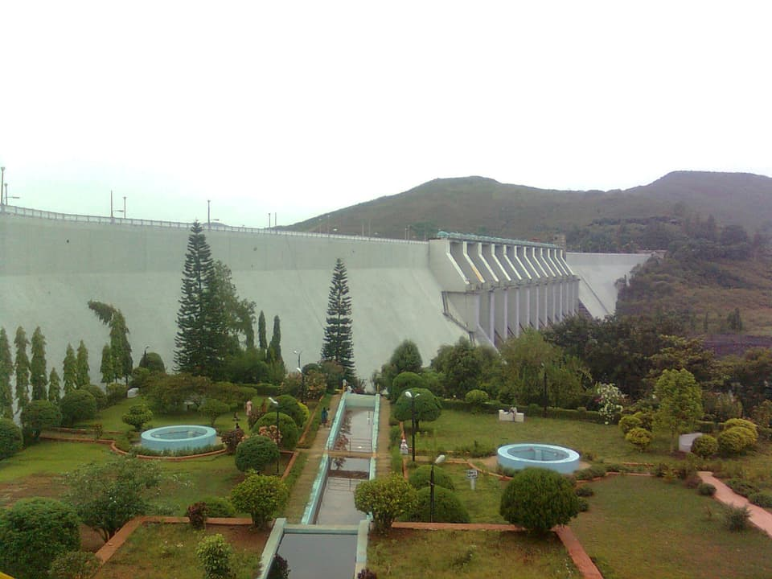

- दिन 1शहर, संग्रहालय और जलाशय
सुबह पिकअप, सबर श्रीक्षेत्र, फिर जनजातीय संग्रहालय। शहर में दोपहर का खाना। ढलती दोपहर में अपर कोलाब: बगीचा, पानी के ऊपर का व्यूपॉइंट और बाँध की सड़क से सूर्यास्त।
सबर श्रीक्षेत्रजनजातीय संग्रहालयअपर कोलाब जलाशय- अनुमानित समय
- 09:00सबर श्रीक्षेत्र
- 10:00जनजातीय संग्रहालय
- 12:30कोरापुट शहर में दोपहर का खाना
- 15:30अपर कोलाब का बगीचा और व्यूपॉइंट
- 17:45बाँध की सड़क से सूर्यास्त
- 18:30होटल वापसी
- दिन 2देवमाली और झरने की सड़क
देवमाली के लिए सुबह जल्दी रवानगी, ऊपर समय, उतरते हुए नाश्ता। नंदापुर के पत्थर के मंदिर और 32 सीढ़ियों वाला सिंहासन, फिर रानी दुदुमा तक देहाती सड़क। शाम तक कोरापुट वापस।
देवमालीनंदापुररानी दुदुमा- अनुमानित समय
- 05:00कोरापुट से रवाना
- 07:00देवमाली की चोटी, सूर्योदय
- 09:30नाश्ता, सेमिलिगुडा
- 12:30नंदापुर, बत्रिसा सिंहासन
- 14:00रानी दुदुमा
- 17:30कोरापुट वापसी

अगर आपके पास एक शाम और हो
एक रात पहले पहुँचने से यह एक पूरी यात्रा बन जाती है: पहला दिन जल्दी शुरू होता है और कोलाब पहली शाम में चला जाता है, जिससे दूसरे दिन देवमाली पर ज़्यादा समय मिलता है। अगर तीसरा दिन मिल जाए, तो 3 दिन की योजना देखें।
रानी दुदुमा अगस्त से दिसंबर तक सबसे अच्छा रहता है। सर्दियों के आख़िर में हमसे पूछ लें कि पानी का बहाव अब भी इस चक्कर के लायक है या नहीं।